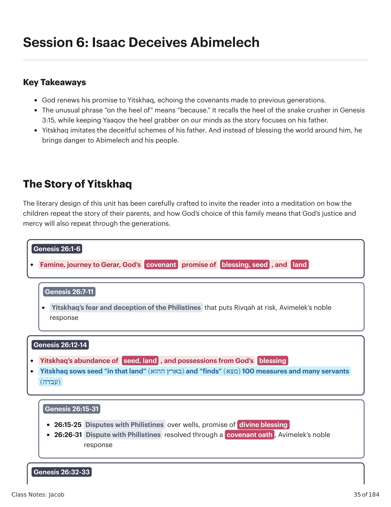
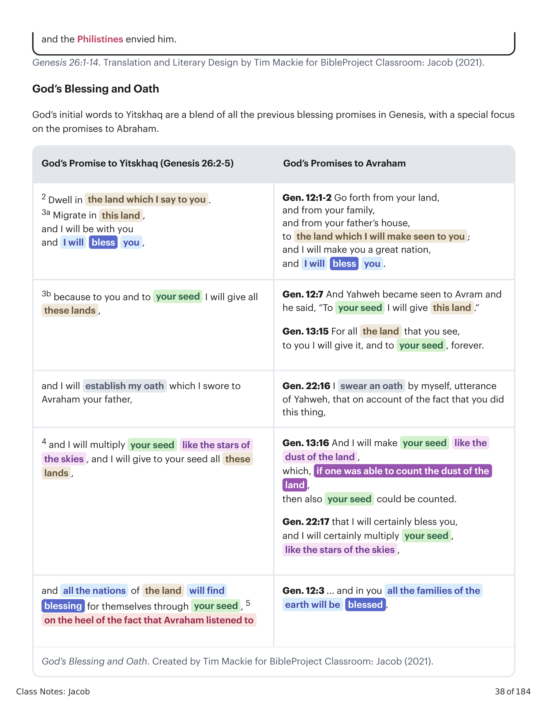
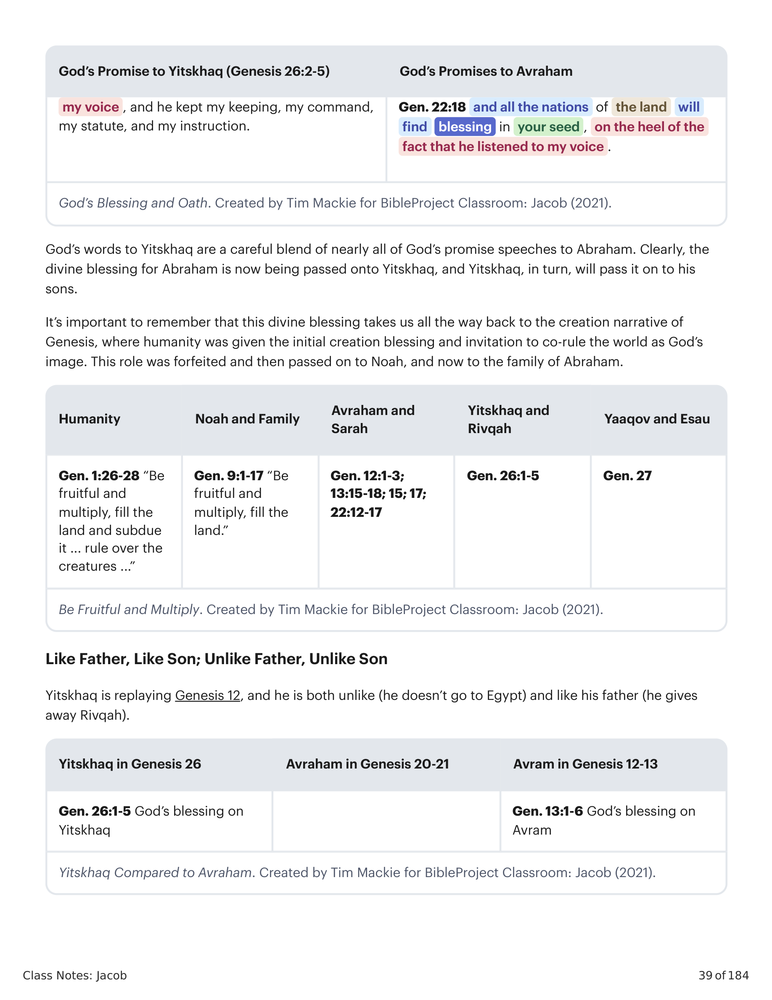
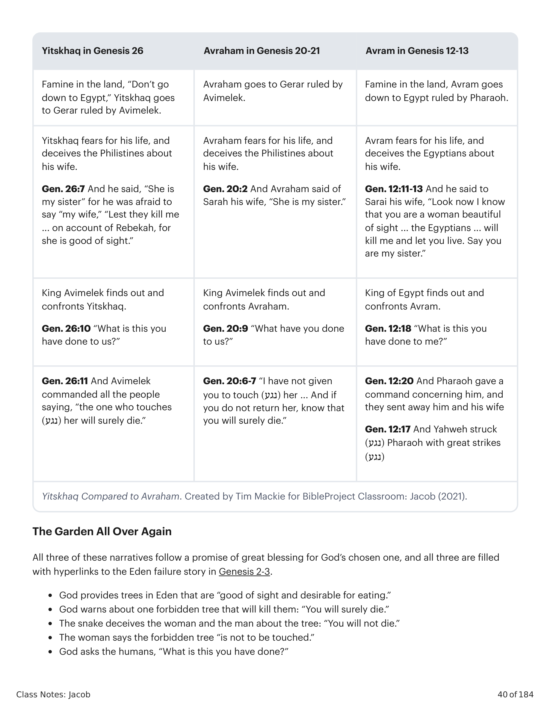

O design literário desta unidade foi cuidadosamente elaborado para convidar o leitor a uma meditação sobre como os filhos repetem a história de seus pais, e como a escolha de Deus por esta família significa que a justiça e a misericórdia de Deus também se repetirão através das gerações.The literary design of this unit has been carefully crafted to invite the reader into a meditation on how the children repeat the story of their parents, and how God's choice of this family means that God's justice and mercy will also repeat through the generations.

Gênesis 26:1-33. Tradução e Design Literário por Tim Mackie para BibleProject Classroom: Jacó (2021).Genesis 26:1-33. Translation and Literary Design by Tim Mackie for BibleProject Classroom: Jacob (2021).
As unidades de abertura e de fechamento formam uma moldura de bênção do Éden em torno da história do engano de Yitskhaq, na qual ele coloca em risco a promessa de descendência futura através de seu medo. Observe que, em contraste com a história paralela de Abraão e Abimeleque em Gênesis 20, aqui Deus não aparece na história para contar a Abimeleque a verdadeira identidade da mulher com Yitskhaq. Em vez disso, ele descobre por conta própria, enquanto olha de uma janela alta.The opening and closing units form an Eden blessing frame around the story of Yitskhaq's deception, in which he puts the promise of future seed at risk through his fear. Notice that in contrast to the parallel story of Abraham and Abimelech in Genesis 20, here God does not appear in the story to tell Abimelech about the true identity of the woman with Yitskhaq. Instead, he finds out on his own, as he gazes out from a tall window.
1 E houve fome na terra, além da primeira fome que houve nos dias de Abraão, e Yitskhaq foi (הלך) a Abimeleque, rei dos filisteus, em Gerar. 2 E Yahweh lhe apareceu e disse: "Não desças ao Egito! Habita na terra que eu te digo. 3 Peregrina nesta terra, e serei contigo e te abençoarei, porque a ti e à tua semente darei todas estas terras, e estabelecerei meu juramento que jurei a Abraão, teu pai, 4 e multiplicarei a tua semente como as estrelas dos céus, e darei à tua semente todas estas terras, e todas as nações da terra acharão para si bênção através da tua semente, 5 por causa do fato de Abraão ter ouvido a minha voz, e guardado o meu mandamento, o meu estatuto e a minha instrução." 6 E Yitskhaq ficou em Gerar. 7 E os homens do lugar perguntaram sobre sua mulher, e ele disse: "Ela é minha irmã," pois tinha medo de dizer "minha mulher," "para que os homens do lugar não me matem por causa de Rivqah, pois ela é boa de vista." 8 E aconteceu que, quando os dias ali foram longos, Abimeleque, rei dos filisteus, olhou por uma janela e viu, e eis: Yitskhaq brincava com sua mulher Rivqah. 9 E Abimeleque chamou Yitskhaq e disse: "Eis que certamente ela é tua mulher! Como então disseste 'ela é minha irmã'?" 10 E Abimeleque disse: "Que é isso que fizeste conosco? Um do povo poderia facilmente ter-se deitado com tua mulher, e tu terias trazido culpa sobre nós." 11 E Abimeleque ordenou a todo o povo, dizendo: "Aquele que tocar (נגע) neste homem ou sua mulher certamente morrerá." 12 E Yitskhaq semeou (זרע) naquela terra e achou no mesmo ano cem medidas (שערים), e Yahweh o abençoou, 13 e o homem se tornou grande, e foi crescendo até se tornar muito grande; 14 e teve rebanhos de ovelhas e rebanhos de gado e muitos servos.1 And there was a famine in the land, besides the first famine which was in the days of Abraham, and Yitskhaq went (הלך) to Abimelek the king of the Philistines at Gerar. 2 And Yahweh appeared to him, and he said, "Don't go down to Egypt! Dwell in the land which I say to you. 3 Migrate in this land, and I will be with you and I will bless you, because to you and to your seed I will give all these lands, and I will establish my oath which I swore to Abraham your father, 4 and I will multiply your seed like the stars of the skies, and I will give to your seed all these lands, and all the nations of the land will find blessing for themselves through your seed, 5 on the heel of the fact that Abraham listened to my voice, and he kept my keeping, my command, my statute, and my instruction." 6 And Yitskhaq stayed in Gerar. 7 And the men of the place asked about his wife, and he said, "She is my sister," for he was afraid to say "my wife," "So that the men of the place don't murder me on account of Rivqah, for she is good of sight." 8 And it came about, when the days for him there were long, that Abimelech king of the Philistines looked down through a window, and he saw, and look: Yitskhaq was playing with his wife Rivqah. 9 And Abimelech called Yitskhaq and he said, "Behold, certainly she is your wife! And how then did you say, 'She is my sister'?" 10 And Abimelech said, "What is this you have done to us? One of the people might easily have laid with your wife, and you would have brought guilt upon us." 11 And Abimelech commanded all the people, saying, "He who touches (נגע) this man or his wife shall surely be put to death." 12 And Yitskhaq sowed seed (זרע) in that land and he found in the same year a hundred measures (שערים), and Yahweh blessed him, 13 and the man became great, and he went on growing great until he became very great; 14 and he had herds of flocks and herds of cattle and many servants.
As palavras iniciais de Deus a Yitskhaq são uma mistura de todas as promessas de bênção anteriores em Gênesis, com foco especial nas promessas a Abraão. É importante lembrar que esta bênção divina nos remete até a narrativa de criação de Gênesis, onde à humanidade foi dada a bênção inicial de criação e o convite para co-governar o mundo como imagem de Deus. Este papel foi forjado e depois passado a Noé, e agora à família de Abraão.God's initial words to Yitskhaq are a blend of all the previous blessing promises in Genesis, with a special focus on the promises to Abraham. It's important to remember that this divine blessing takes us all the way back to the creation narrative of Genesis, where humanity was given the initial creation blessing and invitation to co-rule the world as God's image. This role was forfeited and then passed on to Noah, and now to the family of Abraham.

A Bênção e o Juramento de Deus. Criado por Tim Mackie para BibleProject Classroom: Jacó (2021).God's Blessing and Oath. Created by Tim Mackie for BibleProject Classroom: Jacob (2021).

Sê Frutífero e Multiplica; Yitskhaq Comparado a Avraão. Criado por Tim Mackie para BibleProject Classroom: Jacó (2021).Be Fruitful and Multiply; Yitskhaq Compared to Avraham. Created by Tim Mackie for BibleProject Classroom: Jacob (2021).
Yitskhaq está reencenando Gênesis 12, e ele é tanto diferente (não vai ao Egito) quanto semelhante a seu pai (entrega Rivqah). O ponto: Yitskhaq reprisa a falha de seu pai e a falha de Adão e Eva no jardim. O filho é um enganador, assim como seu pai. Mas observe: a história do engano e da falha de Yitskhaq foi colocada após a história do engano de Yaaqov. Isso une todas as três gerações dos escolhidos de Deus em um padrão de engano e falha: como o pai, como o filho, como o neto!Yitskhaq is replaying Genesis 12, and he is both unlike (he doesn't go to Egypt) and like his father (he gives away Rivqah). The point: Yitskhaq replays the failure of his father and the failure of Adam and Eve in the garden. The son is a deceiver, just like his father. But notice, Yitskhaq's deception and failure story has been placed after Yaaqov's deception story. This links together all three generations of God's chosen ones in a pattern of deception and failure: like father, like son, like grandson!

Yitskhaq Comparado a Avraão. O Jardim de Novo. Criado por Tim Mackie para BibleProject Classroom: Jacó (2021).Yitskhaq Compared to Avraham. The Garden All Over Again. Created by Tim Mackie for BibleProject Classroom: Jacob (2021).
Como o engano de Yitskhaq ameaça o plano de Deus de trazer bênção através de Yitskhaq e seus descendentes?How does Yitskhaq's deception threaten God's plan to bring blessing through Yitskhaq and his descendants?